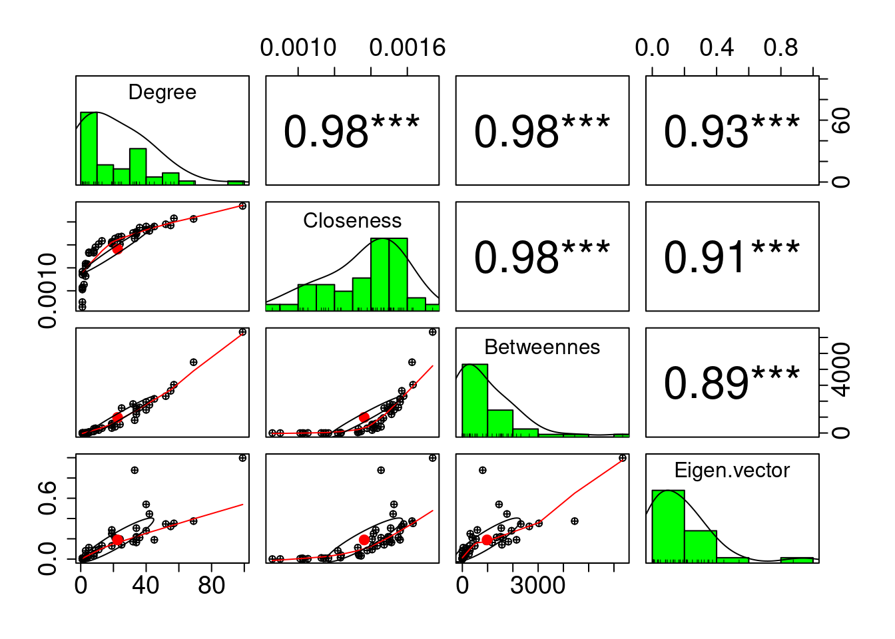

3 Navegabilidad Rio Magdalena
1Michael Steven Bonilla, 2Juan C. Correa
1Universidad del Rosario, Bogotá, Colombia, 2Critical Centrality Institute, Monterrey, México
3.1 La librería “FinancialMaths”
En R, existe una librería de matemáticas financieras de uso sencillo para principiantes en lenguajes de programación. Esta librería se llama FinancialMaths que se desarrolló en Diciembre de 2016.
En esta librería vamos a encontrar funciones muy útiles tales como:
## [1] 4- Análisis de Flujos de Caja
## CF Analysis
## PV 91.674727
## MAC D 2.968938
## MOD D 2.854748
## MAC C 8.865665
## MOD C 10.941756Como parte de los resultados que nos arroja la función anterior, tenemos el valor presente (Present Value), la duración y la convexidad de Macaulay y la duración y la convexidad modificadas para flujos de efectivo determinados. También traza la convexidad y el diagrama de tiempo de los flujos de efectivo.
- Tasa Interna de Retorno (en inglés Internal Rate of Return)
## [1] 0.05166628- Valor Presente Neto (en inglés NPV) para una serie de flujos de caja y ofrece un diagrama de tiempo de los diagramas de flujo. Por ejemplo, supongamos que tenemos lo siguiente:
## [1] -13.41187- Valor Temporal del Dinero: Resuelva el valor presente, el valor futuro, el tiempo o la tasa de interés para la acumulación de dinero que genera interés compuesto. También puede trazar el valor de tiempo para cada período.

## TVM
## PV 10.000000
## FV 20.000000
## Periods 14.035517
## Eff Rate 0.050625
## i^(2) 0.050000- Tabla de Amortización
## $Schedule
## Payment Interest Paid Principal Paid Balance
## 1 503.75 5.00 498.75 501.25
## 2 503.75 2.51 501.25 0.00
##
## $Other
## Details
## Loan 1000.000
## Total Paid 1007.510
## Total Interest 7.510
## Eff Rate 0.0053.2 Python dentro de R
En las ciencias de datos y analítica de datos, tanto R como Python son lenguajes de programación muy utilizados. Estos lenguajes de programación son integrables dentro de RStudio usando la librería reticulate que instalaremos de la misma manera aplicada para instalar otras librerías.
## Installing package into '/home/jcc/R/x86_64-pc-linux-gnu-library/4.3'
## (as 'lib' is unspecified)Ahora, pasamos a insertar un chunk para Python para invocar las librerías de Python.
Figure 3.1: Tipos de Chunk para Archivos RMarkdown en RStudio
Ahora, entendiendo cómo logramos insertar un chunk de Python en un archivo RMarkdown, ahora vamos a usar en el siguiente ejemplo.
import quandl
import matplotlib.pyplot as plt
import warnings
warnings.filterwarnings('ignore')
plt.style.use('seaborn')Ahora, vamos a extraer unos datos de la librería quandl de la siguiente manera.
oil = quandl.get("NSE/OIL", authtoken="vEjGTysiCFBuN-z5bjGP",
start_date="1980-01-01",
end_date="2020-01-01")plt.figure(figsize=(10, 6))
plt.plot(oil.Close)
plt.ylabel('$')
plt.xlabel('Date')
plt.savefig('Oil_Price.png')
plt.show()